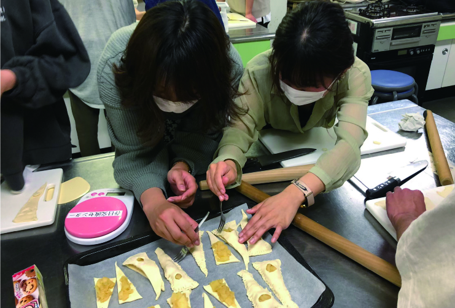
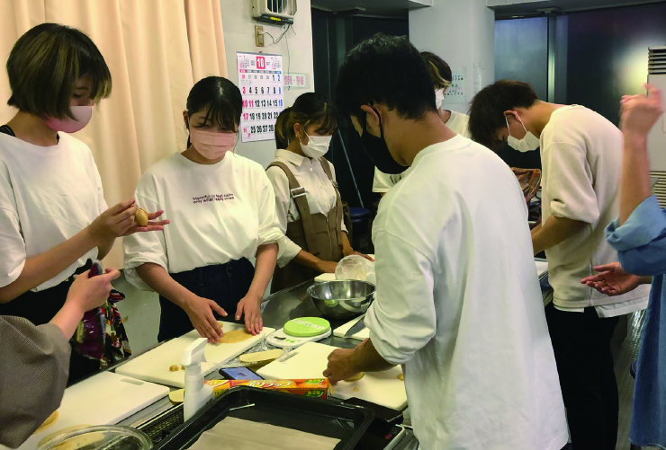
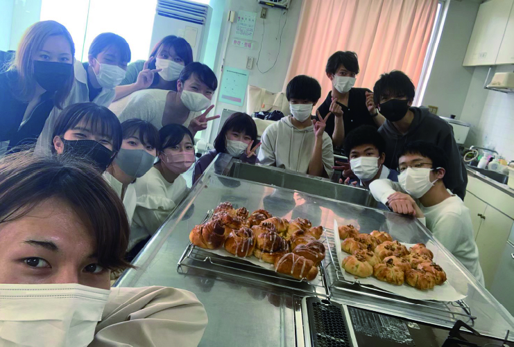
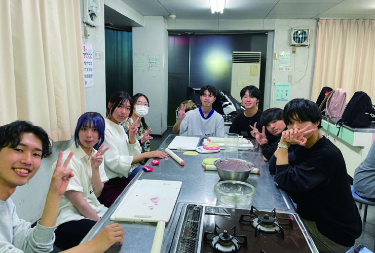

どんなサークル？
Bench Timeは毎週楽しくおいしいパンを作っています！
ただ作るだけでなく、発酵などの待ち時間では授業のことや
趣味のことなどで毎回盛り上がります！
おしゃべり好きな人、パンが好きな人、
ゆるいサークルを探している人はぜひ体験に！！
人数は2023年5月20日時点で75人所属しており、
毎回の活動では10人前後参加します！
男女比は約１：１！気軽にご参加ください！
実際に聞いた！
Bench Time の良いところ！
会費がその都度回収だから
気軽に参加できる！！
出来立てほやほやの
アツアツパンが食べれる！！
学年、学類、性別関係なく
楽しくおしゃべりができる！
雰囲気がほんわかしていて良い！
料理が得意じゃなくても
優しく教えてくれる！！
活動について
奇数週(第１、第３)土曜日 10:30 ~ 13:30
偶数週(第２、第４)木曜日 18:30 ~ 21:30
の日程で活動しています！
画像は2023年5月のカレンダーです。参考までに！
毎回春日交流センターで活動しています！
向かいのローソンが目印です！
住所 : 茨城県つくば市春日2-36-1
会費はその都度300円程度回収のため、
気楽に参加いただけます！体験の時は無料です！
持ち物は決まったものはありません！作ったパンを
持ち帰る方は袋を持参してください。
服装は粉が付着してしまう可能性があるため、
粉が目立たない服(白い服など)、汚れても問題
がない服装を推奨しています！
Q & A
Q ネイルは落とした方がいいですか？
Q ネイルは落とした方がいいですか？
A 備品に使い捨ての手袋があるのでそのままで大丈夫です！
Q 院生でも大丈夫ですか？
Q 院生でも大丈夫ですか？
A 学年問わず体験歓迎です！！2023年5月時点では既に3人ほど新しく入サしています！
Q 料理未経験でも大丈夫ですか？
Q 料理未経験でも大丈夫ですか？
A サークル員が1から教えてくれるので全く問題ないです！